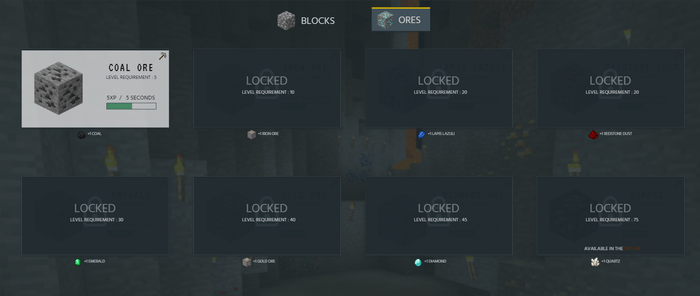
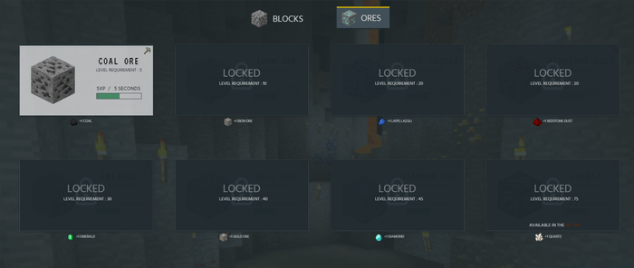

TOP
TOP


Minecraft Idle is a web based game that will require very little interaction from the user. The primary feature of an idle game is its strategy and how the user is able to maximise and plan ahead when leaving the game to run by itself. The game is currently still a WIP.
Anthony Jasper, Luke Smith
Data Scientist, Designer, Developer
Google Sheets, UXpin
There were three problems I wanted to address when designing for this minecraft game. Firstly, the skill item containers. They would vary in sizes but they need to keep some sort of similarity throughout all of them to allow the user to know what they could interact with. Secondly, the large number of colours being used. I needed to find a way to use multiple colours to represent each skill but to also have a colour that I could use for the call to actions. Lastly, the amount of information for the user to process. There will be a lot of numbers and notifications on the screen to update the user on their progress, therefore it needs to be noticable but also subtle to not overload the user.
120+
Development - Days
15
Pages
11
Skills
128
Gametime Needed
For this project, I needed to use a multitude of colours ranging across all the warm, cool and neutral colours. This was something far different from just picking 1-3 colours, now I have to work with 10+. I made this decision because I wanted to differentiate each of the skills and have the user associate a certain colour to a certain skill.
In the image, you will notice that I have used the colour green for the woodcutting skill. With the amount of skills there are, you can imagine the amount of colours that are being used throughout the design, which caused an issue when it came to some of the call to actions.

An example of one of these issues, which I plan on revisiting at a later date, are the buttons. In the image, you can see that the buttons are a darker shade of yellow, on top of a lighter yellow with slight opacity. What makes it worse is the dark text being used. This is just poor accessibility and was an oversight when doing the design.
I have used two fonts across the design. The first for the skill and item names and the other for everything else. Since this is based on minecraft, I had to use a font that resembled the minecraft logo. The second, I wanted the font to be similar to the minecraft font but with better readability when used in large quantities. I was able to find the font "Hind" which ends most of its strokes with flat endings, helping create a clear-cut between the characters.
The most prominent part of the site are the cards being used for the skills. They may vary in size and the content they contain but they still need to maintain the same shape, colours and shadows across each area to allow the user to know exactly what they are with minimum attention.
Other Design Patterns:
- Navigation Tabs
- Levels
- Periodic Events
- Investment Loops
- Self Monitoring
 
